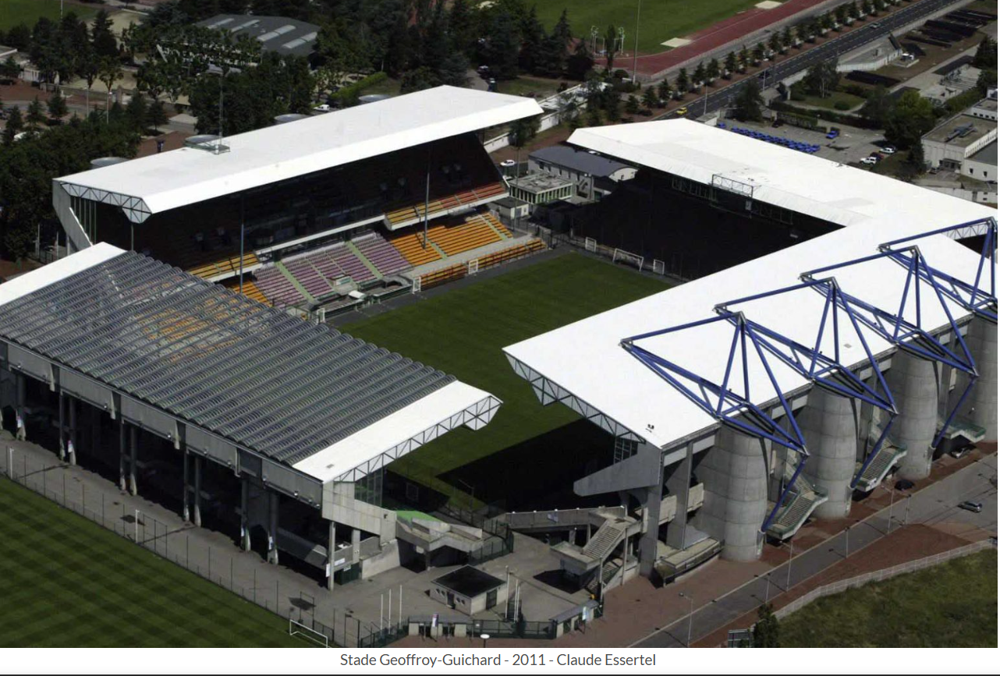
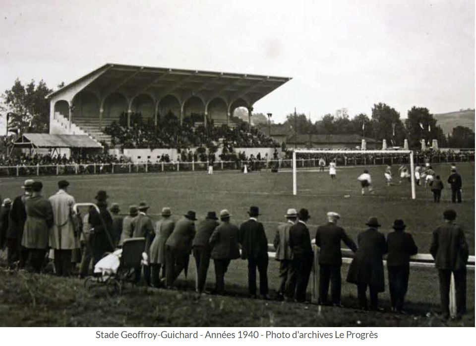
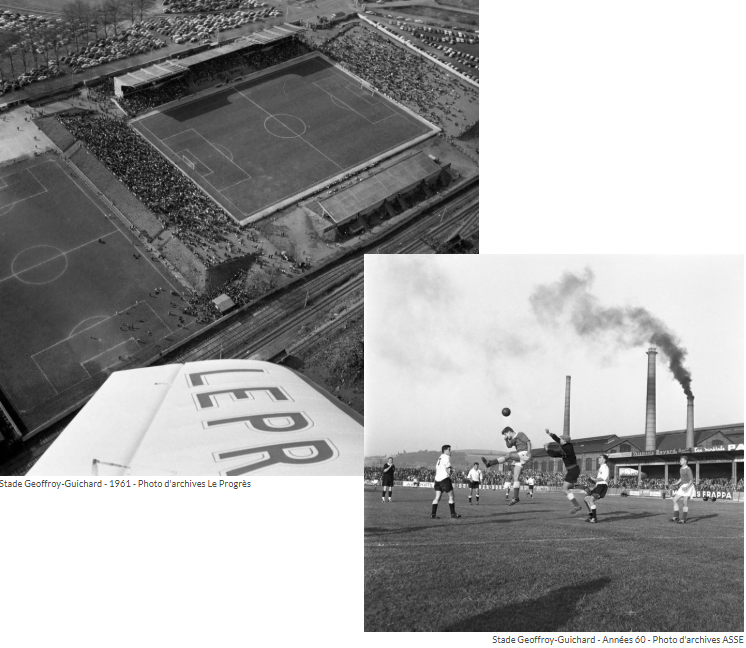
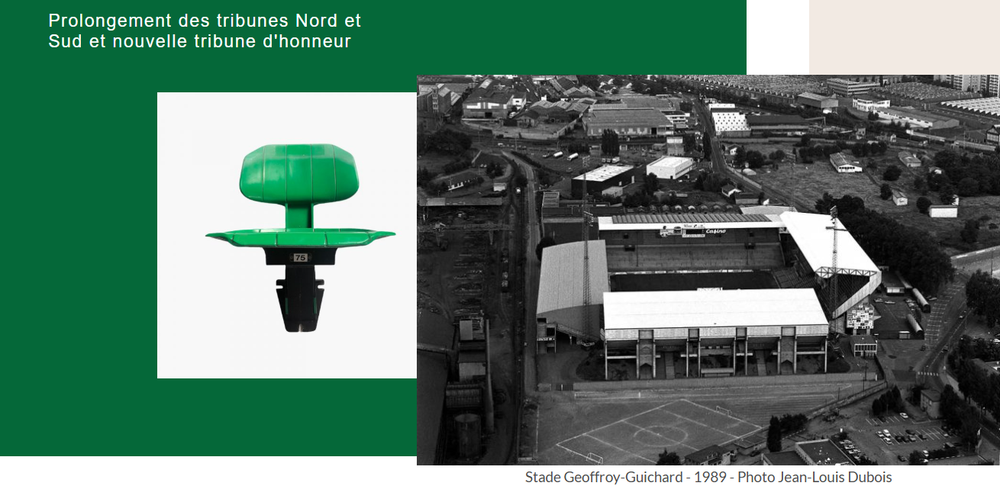
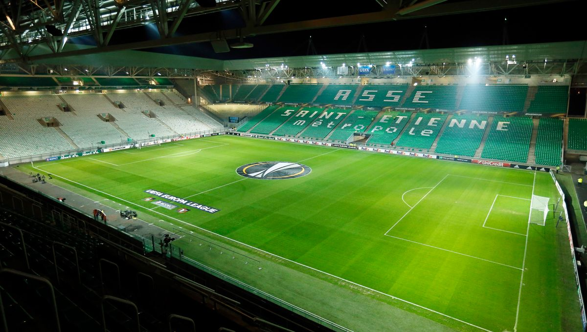

Découvrez l’histoire, les modernisations et l’ambiance unique du célèbre “Chaudron”, domicile de l’AS Saint-Étienne.
Le Stade Geoffroy-Guichard, situé à Saint-Étienne, est le stade historique de l’AS Saint-Étienne. Inauguré le 13 septembre 1931, il n’a jamais changé de nom. Surnommé “Le Chaudron”, il est réputé pour son ambiance bouillante lors des matchs et symbolise la passion des supporters.

À l’origine, le stade a été construit sur un terrain vague. Geoffroy Guichard, fondateur de la chaîne Casino, acheta le terrain pour le céder à l’ASSE. Le stade a été inauguré en 1931 avec une tribune unique de 700 places. Dans les années 1930-1940, de nouvelles tribunes et la tribune Henri-Point furent ajoutées, portant la capacité à environ 15 000 spectateurs.

En 1957, la piste d’athlétisme disparaît et le stade adopte une forme rectangulaire avec plus de 30 000 places. Les années 1960-70 voient la reconstruction de tribunes, l’installation d’éclairage, la création de la "Maison verte" et l’ouverture de la boutique officielle.

Pour l’Euro 1984, le stade fut modernisé avec reconstruction des tribunes, toit sur la tribune Sud et panneau électronique. La capacité atteignit 48 274 places. Pour la Coupe du Monde 1998, toutes les places devinrent assises et les tribunes modernisées, inaugurant une capacité de 35 616 places.

Aujourd’hui, le Stade Geoffroy-Guichard reste le domicile de l’AS Saint-Étienne et conserve son surnom de “Chaudron”. Il est reconnu pour l’ambiance exceptionnelle créée par les supporters et accueille régulièrement des compétitions nationales et internationales.
